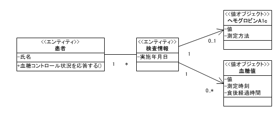
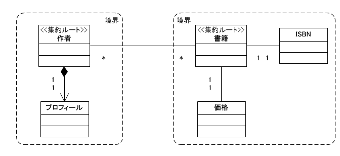

ドメイン駆動設計ドメインモデルの役割と例
ドメイン駆動設計とは
ドメイン駆動設計は、ドメインモデルの重要性とその役割に焦点を当てたオブジェクト指向の手法です。 アプリケーションの本質はドメインにあるという考えのもと、設計者はドメインに集中してドメインモデルを作成します。 ドメインモデルはドメインの中に存在するオブジェクトの集まりを抽象化したもので、ドメインはシステム化対象領域のことです。 ドメインとドメインの外側 (例えば実装技術など) との境界を明確にして、ドメインモデルを隔離します。 隔離されたドメインモデルをシステムの土台とすることで、実装技術などに左右されず、安全に拡張できるシステムを設計できます。 設計や実装、コミュニケーションなどで登場するすべての概念 (用語やクラス名など) は、ユビキタス言語 (後述) て記述すうることで追跡可能なシステムができます。 ドメイン駆動設計は、ドメインモデルを中心にシステムの洗練と検証を繰り返すモデル駆動型の手法です。 ドメイン駆動設計は、良いドメインモデルを作成するための指針やパターンを示しています。
目標
ドメイン駆動設計の目的は「よいソフトウェア」を設計することです。 ただし「よいソフトウェア」とは何か、を簡潔に定義することは容易ではありません。 ここでは、「よいソフトウェア」を設計するためにクリアすべき目標について考えます。
ドメイン駆動設計の目標の一つは、「利口なUI」(DDD本) や「トランザクションスクリプト」(Fowler 2002) と呼ばれるアンチパターンなシステムからの脱却です。
これらのアンチパターンの特徴です。
- ドメインモデルがありません。
- そのような名前のクラスやレイヤがあっても、役割を持っていません。(単なるデータの入れ物)
- 役割を持っていても、そのクラスにはふさわしくなかったりします。
- 変更・修正による影響範囲の見極めには時間がかかります。(追跡困難・改良困難)
- 影響範囲が広範囲になる傾向があります。
残念ながら、実際に開発されているシステムの多くに見られる傾向でもあります。
アンチパターンの例として、Struts系のフレームワークを使ったWebアプリケーションを考えてみます。もし、Webアプリケーションが下図のような構造になっていれば、それはアンチパターンと言えます。
(A) や (B) では、JSPやアクションの中にSQL文が組込まれていて、そのSQL文で多くの業務ロジックが実現されています。そして、同じようなSQL文が、複数のJSPやアクションの中に散在しています。(C) では、Modelと称するレイヤやクラスがありますが、実態は、DAOやDTOと呼ばれるような役割 (バケツリレーのバケツ) しか持っていません。(A) (B) と同様に (C) の場合も、SQL文が重複したり散在します。そして、ドメインの本質的な振る舞い (ビジネスロジック) は、各画面の都合に合わせたSQL文で実現されています。たとえ、一部のORMフレームワークなどを使って、SQL文を隠ぺいしていたとしても、問題の本質は同じです。
ドメイン駆動設計あるいはオブジェクト指向によって設計されたシステムでは、オブジェクトはそれにふさわしい名前と責務を持ちます。そして、それらが協調することでビジネスロジックを実現します。ふさわしい名前や適切に割り当てられた責務によって、アプリケーション全体も理解しやすくなります。
一方、SQLで実現されたロジックには、オブジェクトの存在や役割に相当する概念は無く、いくつかのデータエンティティに跨った処理になっています。そのため、コードの目的が分かり難く、再利用や変更による影響も分かり難くなります。開発の初期段階においては、大きな問題にはならないかもしれません。しかし、ソフトウェア・エントロピー (複雑度) がすぐに増大して、手に負えなくなるはずです。
ドメイン駆動設計は、このような問題を解決するために必要なのです。
しかし、利口なUIには次のような側面があり、それによって問題点が見過ごされてしまうようです。
DDD本には次のように書かれています。
※引用：ここから (DDD本の第4章 p.75)
- 単純なアプリケーションの場合、生産性が高く、すぐに作れる。
- それほど有能でない開発者でも、この方法ならほとんど訓練しないで仕事ができる。
※引用：ここまで (引用元には箇条書きで他に5点示されています)
これは、多数の開発者を一時的に集めて作業をするようなプロジェクトにおいては、都合の良い面もあるかもしれません。 しかし、プロジェクトの後半や仕様変更、保守、改修といった場面では、利口なUIが利点となっているケースは少ないでしょう。
DDD本には「利口なUI」の欠点についても次のように書かれています。
※引用：ここから (DDD本の第4章 p.75)
- アプリケーションの統合は困難で、データベースを経由させるしかない。
- ふるまいが再利用されことも、ビジネスの問題が抽象化されることもない。ビジネスルールは、適用先の操作それぞれで複製されることになる。
※引用：ここまで (引用元には箇条書きで他に2点示されています)
[目次に戻る]始め方
ドメイン駆動設計を実践するには、ビジネスの本質を追求する視点と、それをモデル化できるオブジェクト指向スキルが必要です。 オブジェクト指向の基本について知らずに、いきなり、DDD本から入っていくと、ドメイン駆動設計はとてもつかみどころのないものに思えるかもしれません。 ただし、オブジェクト指向スキルが揃っていないと始められないというわけではありません。 ドメイン駆動設計は反復型開発で実践します。 この反復とともに、スキルアップしていけば良いと思います。
次の点に気を付けてください。
- ドメイン駆動設計を難解に考え過ぎないようにします。
- 最初から多くのこと (パターンやプラクティス) を実践しようとしないようにします。
- 「最初の壁」(後述) に当たった時の対策を考えておきましょう。
- 反復型で開発します。
- DDD本は2003年頃に書かれています。日々実装環境などは進化しています。従って、最近の環境を考慮しながら取り入れていくようにします。
ドメイン知識を持ったメンバー (ドメインエキスパート) も必要です。 ドメインモデリングをどこから始めるかという明確な決まりはありません。最初は、ドメイン内の中核オブジェクトから始めるのが良いでしょう。 例えば、病院業務ドメインであれば、「医師」や「病室」などです。 そして、比較的説明しやすいオブジェクトが良いと思います。 オブジェクトを説明した短い文章を「オブジェクト記述」と呼びます。
(例)
オブジェクト名：医師
オブジェクト記述：医師免許を有し、医療および保健指導を行う役割。
[目次に戻る]
最初の壁を超える
ドメイン駆動設計やオブジェクト指向の導入時に発生しやすい問題 (壁) について説明します。
この壁を乗り越えなければ、結局、従来のやり方に戻ってしまうことになります。壁とは、下図に示すような「立ち上がり期」の停滞感です。具体的な成果物が少なく、それが役に立つのかさえ自信が持てないような状況に陥ることがあります。
DDD本のプラクティスを真似をするだけではうまくいきません。経験者やメンターを探す等の対策が必要です。

この最初の壁を乗り越えられなければ、ドメイン駆動設計の効果を得られる前に、従来型に戻ることになります。
[目次に戻る]主要な概念
この章では、ドメイン駆動設計の主要なキーワードとその考え方を理解したいと思います。
ここで少し留意することは、DDD本の出版は 2003年で、15年以上も前だということです。当然、アプリケーションの構築に使用できるフレームワークなどの要素技術は、当時よりも進化しています。そのため、DDD本に書かれている一部の概念については、使用可能な要素技術などを踏まえて再考することも必要です。
ソフトウェア
一般にソフトウェアとは、コードだけではなく、設計書などのドキュメントを含めたものを指します。
[目次に戻る]開発チームと実践的モデラ
開発チームは、ユーザ、ドメインエキスパート (業務の専門知識をもつ人) 、ソフトウェア技術者で構成されます。チーム内では、ユビキタス言語 (後述) を使ってコミュニケーションを行います。実践的モデラ・パターンでは、分析、モデリング、設計、プログラミングというように、過度に役割を分離しません。これは、チームのメンバー全員が、モデラであり、プログラマであるべき、という考え方です。しかし、現実問題として、実践的モデラ・パターンでチームを構成することが困難な場合もあります。ただし、そのような場合でも、全員がモデルと実装コードを理解し、関心と責任を持つことが求められます。
[目次に戻る]
ユビキタス言語
どんなチームでもコミュニケーションは重要です。しかし、どうしても、人や役割によって使用する用語の意味が、微妙に違っていることがあります。ユビキタス言語とは、ドメインエキスパートの知識やドメインモデルをもとに、用語の微妙な違いを排除し、より正確なコミュニケーションを行うためのものです。ドメインモデルや実装モデルの要素の名前とも正確に対応付けします。 ユビキタス言語は、モデルや実装コードのクラス名、メソッド名などと双方向に追跡可能 (紐付けられる) にします。
※DDD本 p.26 から引用：ここから
「モデルを言語の骨格として使用すること。 チーム内のすべてのコミュニケーションとコードにおいて、その言語を厳格に用いることを、チームに約束させること。 図やドキュメント、そして何より会話の中では同一の言語を使用すること。 言語を使う上で問題があれば、代わりの表現を用いて実験することで、問題を取り除くこと。 そうした表現は代りとなるモデルを反映している。 そこで、新しいモデルに合わせてコードをリファクタリングし、クラス、メソッド、モジュールの名前を変更すること。 会話の中で用語が混同されていたら、普通の単語の意味について認識を合わせるのと同じやり方で解決すること。 ユビキタス言語における変更は、モデルに対する変更であると認識すること。」
※DDD本から引用：ここまで
[目次に戻る]ドメインモデル
ドメインモデルとは、あるドメインに存在する概念を抽象化したものです。Webアプリケーションでよく使われているレイヤ化アーキテクチャであれば、ドメイン層やアプリケーション層 (サービス層) に位置するオブジェクト群です。ドメインモデルは、ユビキタス言語や、UMLなどのモデリング言語、プログラミング言語で定義されます。ドメインモデルを構成するオブジェクトには、エンティティ、値オブジェクト、サービスがあります。
[例] ドメイン：書店在庫管理。エンティティ：書籍。値オブジェクト：ISBN。サービス：在庫移動処理。
[目次に戻る]エンティティ
「エンティティ」は、ドメインモデルを構成するオブジェクトの種類です。エンティティの他にも、「値オブジェクト」や「サービスオブジェクト」があります。エンティティは、連続性と識別性を持ち、システムのライフサイクルを通して一意に識別されます。 ドメイン駆動設計では、多くの場合、オブジェクト指向モデリングによってオブジェクトを見つけます。ただし、オブジェクト指向モデリングの経験者でも、オブジェクトを見つけることは簡単ではありません。そして、答えは1つとは限られません。そこで、オブジェクトを見つけるときのヒントを紹介します。少々古典ですが、シュレイアー氏とメラー氏による「オブジェクト指向システム分析」という本があります。その本には、オブジェクトの候補として以下が挙げられています。参考になると思います。
- 有形物
- 人、商品、伝票。
- 役割
- 人や構成により演じられる役割。医師、患者、顧客、従業員。医師は患者にもなる。
- 出来事
- 飛行、事故、故障、サービス要求。
- 相互作用
- 買い入れ、結婚。
- 仕様
- 製品などの仕様。
DOA (データ中心アプローチ) でも、上に挙げたような概念やモノは、テーブルの候補となるでしょう。そして、それらの概念やモノは、エンティティの有力な候補です。各エンティティの責務や協調者についても、分析、設計、実装を行うことで、ドメインモデルとなっていきます。少し乱暴ですが、各論理テーブルは、(かなりの確率で) 妥当なエンティティと言えます。テーブル名や列名は、そのクラス名や属性名となります。ただし、テーブルにはありませんが、エンティティは「メソッド」を持ちます。主にメソッドによって、ドメインにおける責務を実現します。これは、重要な違いです。
例えば、倉庫や在庫移動といったモノや業務イベントに（人間のように）責務・役割を担ってもらいます。倉庫に在庫量を問い合わせると、在庫量を応えてきます。実世界の倉庫自身は、何も応えてはくれません。
[目次に戻る]値オブジェクト
値オブジェクトは、ドメインモデルを構成するオブジェクトの類型の1つです。エンティティとは異なって、識別性を持たない、変更不可の不変 (immutable) オブジェクトで、その属性だけに関心があるようなオブジェクトです。多くの場合、エンティティオブジェクトの状態を記述する属性として振る舞います。例として、図形処理アプリケーションの座標点クラス (Point) があります。 多くの場合、エンティティの属性の状態を現すクラスは値オブジェクトとなります。 値オブジェクトには一意性は必要なく、同値性が重要です。
エンティティの属性の状態を示すためには、使用するプログラミング言語のプリミティブ型で十分なケースも多くあります。 例えば、Pointクラスではなくても、実数値を２つ持った２次元配列で十分と思われるケースもあります。
しかし、Pointクラスのような値オブジェクトをドメインモデルに追加することで、ドメインモデルをより洗練できることもあります。 ただし、過度に追加するとクラスの爆発と言われるような状況に陥ることもあります。
エンティティと値オブジェクトの例
このサンプルは、正確な医療情報や知識に基づくものではありませんので注意してください。

患者オブジェクトは、血糖値とヘモグロビンA1cの値から、血糖コントロールの状況を判定して、その結果を応答します。血糖値は、空腹時血糖値、食後血糖値など1日の中でも変動する検査値です。ヘモグロビンA1c (HbA1c) は、おおよそ2カ月間の平均血糖値を推定できる検査値です。血糖コントロールとは、運動や食事、薬などで、血糖値を適正範囲に保つことです。
ドメインモデリングにおいて、正解は一つとは限りません。「血糖コントロール状況を応答する」という責務を、患者オブジェクトが持つこともあれば、持たないドメインモデルもあるでしょう。例えば、次図のように診療記録オブジェクトが「血糖コントロール状況を応答する」というメソッドをもつドメインモデルも考えられます。
さらに、医師オブジェクトや診断サービスなどを追加するモデリングも考えられます。
[目次に戻る][引用] DDD本 コラム P.97
「住所」は値オブジェクト？その質問をしているのは誰か？通販会社のソフトウェアでは、クレジットカードを確認し、小包の宛先とするのに住所が必要である。 しかし、同居人も同じ会社に注文したとしても、両者が同じ場所に住んでいると気づくことは重要でない。 この場合、住所は値オブジェクトである。
郵便サービスのソフトウェアは、配達経路を体系化するために、国は地方、都市、郵便区、街区からなる階層形式となり、これは個々の住所にまで至る。 これらの住所オブジェクトは階層における親から郵便番号を導き出すのであり、郵便サービスが郵便街区を割り当てなおすことにしたら、その中のすべての住所が一緒に移動する。 ここでは住所はエンティティである。
[目次に戻る]サービス
ドメインには、エンティティや値オブジェクトにふさわしくない概念も存在します。それらは、サービスとしてモデリングすると自然な場合があります。サービスは基本的に状態を持ちません。エンティティや値オブジェクトではなく、アクションや操作といった概念として存在します。[参考] GRASPパターンの純粋人工物 (Pure Fabrication)
例えば、在庫管理業務の中に、「倉庫間移動」という業務処理があります。倉庫間移動とは、「ある倉庫の在庫商品を別の倉庫に移動する」ことです。ここで、この倉庫間移動は、どのオブジェクトの責務でしょうか。単独のオブジェクトの責務とする場合もあれば、複数のオブジェクトの相互作用とする場合もあるでしょう。
例えば、
(1) 倉庫クラスの静的メソッドとします。
Warehouse#transferStock(倉庫1, 倉庫2, 商品, 数量)
(2) 倉庫クラスのインスタンスメソッドとします。
warehouse.transferStock(別の倉庫, 商品, 数量)
などが考えられます。
しかし、ある責務を、あるエンティティオブジェクトや値オブジェクトの責務とすると、不自然な場合があります。このようなときには、サービスオブジェクトを検討します。そうして、次のように設計してみます。
(3) 倉庫サービスの倉庫間移動
StockService#transferStock(倉庫1, 倉庫2, 商品, 数量)
サービスオブジェクトを適切に追加することで、適切な責務割当てを実現できる場合があります。サービスオブジェクトは、デザインパターンのファサード (Facade) としての役割もあります。但し、色々な責務をサービスに詰め込んでしまうと、アンチパターンと同類になってしまうので、注意してください。まずは、適切なエンティティや値オブジェクトを検討します。
例として、平面に図形描画する処理系を実現する場合を考えてみます。円や矩形の描画処理は、どのように設計・実装すべきでしょうか。
ケース(1)
DrawingService.drawCircle(x, y, radius);
DrawingService.drawRectangle(x, y, width, height, angle);
ケース(2)
Circle circle = new Circle(x, y, radius);
circle.draw();
Rectangle rectangle = new Rectangle(x, y, width, height, angle);
rectangle.draw();
ケース(1)の場合、DrawingServiceはすぐに肥大化し、役割は不明瞭になるでしょう。ケース(2)の方が適切でしょう。
なお、ここでは、在庫管理業務や描画処理系そのものについては議論していません。業種や組織によっても最適なドメインモデルは違うでしょう。
[目次に戻る]モジュール
モジュールという概念は、Javaのパッケージと同義です。モジュール名もユビキタス言語に含まれる名前です。モジュール名、モジュール構成もリファクタリングの対象です。モジュール間は低結合、モジュール内は高凝集にします。
[目次に戻る]集約
※引用：ここから (DDD本 p.125)
集約とは、関連するオブジェクトの集まりである。 データを変更するための単位として扱われる。 各集約にはルートと境界がある。 境界は集約の内部に何があるかを定義するものだ。 ルートは集約に含まれている特定の１エンティティだ￥である。 集約のメンバーの中で、外部のオブジェクトが参照を保持してよいのはルートだけである。 ただし、境界内のオブジェクトは互いに参照を保持しあっても良い。 ルート以外のエンティティは局所的な同一性を持っているが、その同一性は集約内部でのみ識別できればよい。 外部のオブジェクトはルートエンティティのコンテキストを外れると、それらのエンティティを見ることさえできないからだ。
※引用：ここまで (DDD本 p.125)
ただし、集約を見つけ出し適切にモデリングすることは深い問題です。
※引用：ここから (DDD本 p.123)
関係を最小限に抑えるように設計することにより、 関連を辿る処理は単純化され、 関係性の爆発的増加もある程度は制限される。 しかし、ほとんどのビジネスドメインは非常に強く相互に結びついているので、 結局はオブジェクトの参照を通じて、長くて深い経路を辿ることになる。 ある意味で、こうしたもつれはこの世界の現実を反映している。 現実には、はっきりした境界が引いてもらえることはめったにないのだ。 これはソフトウェアの設計における問題である。
※引用：ここまで (DDD本 p.123)
次図は集約の例です。ドメインとしては架空の書店の書籍情報管理を想定しています。出版社の業務であれば、集約ルートとしては、書籍よりもISBNの方が適切かもしれません。(DDD本の「境界づけられたコンテキスト」も参考になります) 実際の開発では、必要なユースケースを実行できるように、リファクタリングと検証を繰り返しながら、ドメインモデルを作り上げていきます。価格やISBNは、使用するプログラミング言語の数値型や文字列型で十分な場合もありますが、ドメインモデルに価格クラスやISBNクラスを追加することで、より洗練された分かり易いモデルになることもあります。

・集約ルートエンティティはグローバルな同一性を持ちます。
- 境界内部のエンティティは境界内でのみ一意となるローカルな同一性を持ちます。
- 境界外にあるオブジェクトは、ルートエンティティへの参照を保持できます。
- 境界外にあるオブジェクトは、境界内部への参照を保持することはできません。集約ルートを介して参照します。
コンテキスト
システム開発では、全体をいくつかの部分に分割することがあります。 多くの場合、分割の仕方は、中心的な設計者の経験などをもとに行われます。 ドメイン駆動設計では、この分割された部分をコンテキストと呼び、その扱い方に具体的な原則を与えています。 (DDD本 第4部 戦略的設計)
ドメイン(システム化対象領域) が大きい場合や、複雑な場合は、単一のドメインモデルでは、すべてを一貫した意図で維持することは難しくなります。 微妙な重複や矛盾も生じてきます。 コンテキストは、「境界つけられたコンテキスト」として「コンテキストマップ」に図示することで、各コンテキストの範囲や、コンテキスト同士の関係を明確にします。 コンテキスト間の整合性をコントロールする必要があります。
小さなコンテキストでも、モデルの重複や矛盾といった分裂は起きます。 モデルについて、チームの全員が全く同じ理解や意図を持っているわけではないからです。 かと言って、コンテキストをさらに分割すると意味をなさない大きさのコンテキストが生まれるかもしれません。分裂のリスクを最少化するためには、1つのコンテキストでは、決定権を持つモデラは一人の方がよいでしょう。 もちろん、「開発チームと実践的モデラ」に述べられているように、全員がモデリングとプログラミングに関心と責任を持たなければなりません。
[目次に戻る]ドメインモデルの例
サンプルドメインの説明
この例は、DDD本の第2章の「例2.2 輸送業務と経路」を参考にしています。
システム化対象のドメインは、船を使った貨物の輸送業務です。 輸送の進捗状況や貨物の位置情報を管理するためのシステムが求められています。例えば、横浜から上海に貨物を運ぶ場合を考えます。 まず、横浜港から内航船を使って博多港へ貨物を運びます。次に博多港で本船 (外航船) に貨物を積み替え、上海港へ運ぶものとします。この場合、 輸送経路は、横浜港 (出発港) → 上海港 (最終到着港) となります。 区間は2つで、横浜港 → 博多港と、博多港 → 上海港です。
さらに博多港では貨物の積み替えのために、貨物移動等の幾つかの荷役作業が発生します。これらも本システムの追跡対象になります。
なお、図中の「内航船」とは国内輸送だけに使用される船で、「外航船」とは国外輸送にも使用される船のことです。
このアプリケーションによって、貨物輸送会社は貨物の追跡と港湾業務の進捗状況をコンテナ単位で把握できるようになります。
輸送経路や区間、港湾業務 (荷役) などがドメインオブジェクトです。
港湾業務は、区間の始点で行われる通関作業や船積などの輸送に関わる作業です。1つの区間は、始点 (拠点) と終点 (拠点) を持ちます。 拠点は、横浜、博多、上海です。(実際のドメインでは、拠点は場所を示す属性だけではなく、もっといろいろな属性を持ちますが、ここでは省略します) 1つの港湾業務が完了すると完了日がアプリケーションに入力されます。 作業実績が更新され、港湾業務の進捗状況を把握できるようになります。 また、港湾業務リストには、出航や着港が含まれているので、その進捗状況から船 (貨物) の位置を把握できます。
なお、最終到着港 (例では上海) での積み降ろし作業などは、次の区間 (陸路など) の始点での荷役とし、このシステムの対象外とします。
ドメインオブジェクトを見つける
ドメインエキスパートや貨物輸送に関する書籍、ネットに公開されている情報などをもとにオブジェクトの候補を見つけます。 上述の「エンティティ」では、次のようなものを候補を見つけるきっかけに挙げました。
- 有形物 : 人、商品、伝票
- 役割 : 人や構成により演じられる役割。医師、患者、顧客、従業員。医師は患者にもなる。
- 出来事 : 飛行、事故、故障、サービス要求
- 相互作用 : 買い入れ、結婚
- 仕様 : 製品などの仕様
また、データ中心アプローチ関係で示されているデータエンティティの見つけ方も参考にできます。
設計例
ドメインエキスパートからドメイン知識を得ながら、分析・設計・評価を繰返し、作成したドメインモデルの核となる部分が下図です。対象ドメインの本質と言えると思います。
ドメインモデルに絶対的な正解はありません。ただし、良いモデルと悪いモデルはあります。 より良いモデルを作成するためには、DDD本やアナリシスパターン、デザインパターン、オブジェクト指向分析・設計関連の書籍などで上級者の考え方を学ぶことです。 一朝一夕には到達できない、ということは間違いありません。
良いモデルを作成するための決まった手順はありません。(筆者は知りません)
良いモデルの作成に必要なものを列挙します。
- ドメイン知識とその本質を捉えるスキル
- オブジェクト指向によるモデリングスキル
- イテレーション (モデルの拡張、再設計、リファクタリング) を軽快に繰り返せる仕組み
ところで、ドメインモデル図とDOA (データ中心アプローチ) などで設計されたER図は似ているように見えます。 実際、ER図に登場するエンティティは、ドメインモデリングの結果とよく似た構造になることが多いです。 ERモデルのエンティティは、ほぼドメインオブジェクトの候補と言えます。 違う点は、ドメインモデルのオブジェクトは振る舞い (責務) を持ちます。 そして、関連には方向があります。上のモデルの拠点と区間は単方向です。(実際には双方向関連が妥当かもしれませんが、あえて単方向にしました) ERモデルの設計スキルは、ドメインオブジェクトの抽出に役立ちます。
[目次に戻る]開発プロセス
この章では、開発プロセスについて考えます。
ドメインモデル中心の反復型開発
ドメイン駆動設計では「ドメイン中心」の考えで開発していきます。 プロセスは反復型開発が基本です。 開発者はドメインモデルを繰り返し洗練 (ブラッシュアップ) し、そのドメインモデルを土台に構築されたシステムを完成に近づけていきます。
[反復型開発の流れ]
ドメインモデル、実装、ユビキタス言語の３つを整合させながら反復することが重要です。
※反復型開発という名前は、イテレーティブ開発やインクリメンタル開発、アジャイル開発などと似ていますが、本記事では、特に区別しません。
イテレーション
繰り返しの単位をイテレーションと呼びます。各イテレーションの中では、分析から設計、実装、検証まで行います。
実装モデル
実装モデルは、プログラミング言語で表現されたモデルです。 通常は、ドメインモデルだけではなく、ビュー層や永続化層に現れるような、システムとして動かすためのオブジェクトも必要です。 実装モデルは、次のような理由で、反復型開発の初期段階から必要です。
- 実装モデル は、各イテレーションの成果物のひとつで、特にドメインモデルの評価・検証に有用です。
- 実際に動かすことで、ドメインモデルをより正確に検証できます。
- ドメインとドメインモデルについての理解が深まり、チーム内での知識や理解度のバラつきを小さくします。
- ドメインモデリングに関する過剰な分析や議論の空回りを予防します。
- 技術寄りではないメンバーでも検証しやすくなります。
モデル図だけでドメインモデルを検証することは容易ではありません。 「動くソフトウェアモデル」(動作可能な実装モデル) があれば、検証は容易になります。 ただし、イテレーションを繰り返しながら、「動くソフトウェアモデル」を維持することは大変です。 なぜなら、ドメインモデルをリファクタリングすると、メインモデル以外の実装部分にも変更が必要になるからです。 例えば、「動くソフトウェアモデル」がWebアプリケーション型であれば、ビュー層や永続化層にも変更が必要になります。 その結果、イテレーションサイクルが長くなったり、開発者がドメインに集中できなくなったりします。 イテレーションの作業負荷が大きくなって、反復できなくなるケースさえあります。 ドメイン駆動設計で良い結果を得るためには、イテレーションを軽快に繰り返すための仕組みが必要だと思います。
[目次に戻る]イテレーションを軽快に繰り返すための工夫
ドメイン駆動設計ではイテレーションのスピードが重要です。 モデリングそのものを除けば、イテレーションが遅くなる原因は、リファクタリングに伴う実装工数の増加です。 イテレーションでは次の作業が必要です。
① 実装モデルに、ドメインモデルの改良点を反映する
② 実際に動かして検証するために、ビュー層や永続層などを変更する
もしも、イテレーションをスムーズに繰り返すことができなければ、開発者はドメインモデルのリファクタリングに集中できなくなります。 最悪の場合、イテレーションを現実的な工数では繰り返せなくなります。 このセクションでは、イテレーション作業を軽量化するための工夫について、2つの案を紹介します。
a. ツールを使う
Java + JPA で実装したドメインモデルから検証用の Java Web アプリケーションを自動生成することで、イテレーション工数を削減します。 自動生成は、筆者が公開しているツールを利用します。
ただし、この方法には弱点があります。 それは、JPA を最初から必須とする点です。 JPA を使うためには、ドメインモデルに JPAアノテーション (@ManyToOneなど) をつける必要があります。 しかし、ドメインモデルの改良に合わせて JPAアノテーションを変更する作業は面倒です。 コーディングミスによる不整合も発生しやすいです。 この方法は、イテレーションを何度も繰り返すような場合では、実戦的とは言えないかもしれません。
この方法は、ドメイン駆動設計の研修や OJT などに推奨できます。
→ [ツール]ドメインモデルからWebアプリケーションを生成する
b. POJO (Plain Old Java Object) を使う
ここでは、a.で弱点となった JPA アノテーションを、出来るだけ使用しない方法を例示します。
この例では次のように略称します。
「JPA」Spring Boot- Spring Data JPA
「POJO」JPAを使用しないドメインモデル (エンティティ)
例えば、JPA を使ったアプリケーションを構築するとします。 このような場合でも、開発の初期段階では JPA を使用しないようにします。 つまり、@OneToMany などを付けずに、POJO のままのドメインモデルを使って実装し検証します。 そして、ある程度ドメインモデルが安定した段階で、JPA アノテーションを付けるようにします。 こうすることで、初期のイテレーション作業を軽量化できます。
さらに、POJO ベースから JPA ベースへの移行をスムーズにするための工夫も必要です。 POJO では Spring の org.springframework.data.repository.CrudRepository などは使えません。 そこで、CrudRepository と同等のインタフェースを持つリポジトリを自作します。(参考コード後述) 初期段階のイテレーションでは、このリポジトリを使用します。 こうすると、POJOベースからJPAベースに移行するときの変更作業を最小限にできます。
なお、ここでは Spring が実装を提供する CrudRepository などを利用するケースを想定しています。 @Query や SQLを多用するようなアプリケーションは想定していません。 CrudRepository などを使えば、ほとんどのアプリケーションでは、直接 SQL を書く必要はなくなるでしょう。 SQL を多用するアプリケーションでは、この方法は参考にならないでしょう。
[ドメイン]
デバイス管理業務。
社員に貸与するデバイス（スマフォやタブレット）を管理する。
(ルール)
・各社員は複数台のデバイスを使用する。
・各デバイスには最大1個のSIMを装着する。
(アクター)
システム管理者
(ユースケース)
各社員に対して使用中のデバイスの通信事業者を確認する。
＜用語の説明＞
「IMSI」
個体識別番号（３つの番号で構成）
+-- 「MCC」（Mobile Country Number）国番号
+-- 「MNC」（Mobile Network Code）携帯電話事業者の識別番号
+-- 「MSIN」（Mobile Station Identification Number）加入者識別番号
「MSISDN」
電話番号（音声通話用）
「ICCID」
シリアル番号。
SIMカード1枚に1つの番号（携帯電話会社番号を含む）
（例）OperatorMap
MNC 事業者名
---- +----------
00 ソフトバンク
10 NTTドコモ
50 KDDI
51 KDDI
[ドメインモデル]
[Javaコード]
コードを見る[目次に戻る]
他の手法との関係
ドメイン駆動設計では、オブジェクト指向、モデル駆動開発、アジャイル開発を活用します。また、他にも活用できそうな手法があります。この章では、ドメイン駆動設計と他の手法との立ち位置について考えます。
オブジェクト指向
ドメイン駆動設計の中心はドメインモデリングです。ドメインモデリングでは、必ずしもオブジェクト指向モデリングを使う必要はありません。しかし、これまでの実績やモデル駆動開発との相性を考えると、今のところ、オブジェクト指向技術が最適と言えます。ドメインモデル以外のビュー層やインフラストラクチャ層などにも適用します。ドメイン駆動設計では、オブジェクト指向技術は必要な技術です。
[目次に戻る]モデル駆動
ドメイン駆動設計は、ドメインモデルを中心に、ドメインモデルの洗練と検証を繰り返す、ドメインモデル駆動の手法です。
モデル駆動開発 (MDD) とは、OMG (Object Management Group) が提唱するモデル駆動アーキテクチャ (MDA)
に則ったソフトウェア開発手法です。モデル駆動開発では、分析・設計・実装・テストといった開発の流れの中でモデルを作成し、モデル変換を繰り返すことでアプリケーションを開発
(実装ソースコードを自動生成) する手法です。ドメイン駆動設計の反復型開発においても、MDDの考え方に従います。ただし、ドメイン駆動設計では、モデルを「分析モデル」や「設計モデル」等に分けません。つまり、ドメイン駆動設計では、参照するモデルはただ一つとします。
例えば、担当者や工程でモデルを分離すると、追跡可能性が失われたり、実装と乖離してしまうことがあります。このような問題を避けるために、ドメイン駆動設計では1つのモデルだけを作成します。
アジャイル手法
ドメイン駆動設計は、アジャイル手法に則った反復型開発が基本です。ウォータフォール式では、ドメイン駆動設計は成功しないでしょう。また、最初から多くのアジャイルプラクティスやパターンを取り入れようとしても失敗するでしょう。パターンやプラクティスを段階的に取り入れながら、ドメインモデルを高度化し深化させていく、アジャイルな開発スタイルが必要です。そうすれば、ドメイン駆動設計のスキルも段階的に向上できます。
※ 本記事では、アジャイル開発とイテレーティブ開発、反復型開発を区別しないで混用します。
[目次に戻る]アナリシスパターン
ドメイン駆動設計の核心はドメインモデルです。 ドメインモデルの優劣が、システムの優劣に大きく影響します。 ただし、実際のモデリングは簡単ではありません。 マーチン・ファウラー氏の著書「アナリシスパターン」が参考になります。そこには、再利用可能なオブジェクトモデルがパターンとして示されています。 これらのオブジェクトモデルは、例題のドメインだけでなく、他のドメインにも適用できるものです。 ドメイン駆動設計のドメインモデリングにおいて、参考になるでしょう。 アナリシスパターンに書かれているパターンは、よく洗練されたものであり、深いモデルです。 時として、深すぎて難しく感じるものもありますが、とても有益なヒントになります。
[目次に戻る]デザインパターン
ドメイン駆動設計のドメインモデリングの例として有用です。 書籍「オブジェクト指向における再利用のためのデザインパターン」には、オブジェクト指向による設計と実装に関する23個のパターンが記載されています。 各パターンは主に次の4つに分類されます。
(1) 生成に関するパターン
(2) 構造に関するパターン
(3) 振る舞いに関するパターン
(4) マルチスレッドプログラミングに関するパターン
ドメイン駆動設計のドメインモデルを実装する際や、リファクタリングする際に参考になるでしょう。もちろん、ドメイン層以外の層でも役立ちます。書籍「オブジェクト指向における再利用のためのデザインパターン」は、エーリヒ・ガンマ、リチャード・ヘルム、ラルフ・ジョンソン、ジョン・ブリシディースの4共著です。この4人はGoFと呼ばれます。
[目次に戻る]Naked Objects パターン
ドメイン駆動設計と Naked Objects パターンは、通じるコンセプトを持っています。アプリケーションを開発する時には、ドメインオブジェクトだけを作成します。 ユーザインタフェース層やデータアクセス層は、ドメインオブジェクトから自動で作成します。優れたドメインモデルがあれば、ドメインモデルの各インタフェースをビューとしてユーザに公開するだけで、アプリケーションとして機能する、という考えです。 ドメインモデルの各インタフェースとは、サービスやクラスのメソッドやプロパティのことです。ビューは、画面のことです。 本記事で紹介する自動生成ツールDDBuilderは、 Naked Objects パターンにインスパイア (触発) されたものです。
「Naked Objects for .NET - 生産性の高い.NETフレームワーク- InfoQ」から引用します。
※引用：ここから
ユーザインタフェースのレイヤやデータアクセスのレイヤを書く必要がないだけでなく、naked objectsパターンは良いオブジェクトモデリングも促します。 なぜならドメインモデルのプロトタイプを直ちにエンドユーザが評価できるアプリケーションにすることができるからです。 これらのことを聞いた時にほとんどの人は、大規模で複雑なビジネスアプリケーションではおそらく有効でないだろう、という反応を示します。
※引用：ここまで
引用元のサイトでは、大規模アプリケーションの事例も紹介されています。
[目次に戻る]CRC
ドメイン駆動設計では、多くの場合、オブジェクト指向モデリングを使用します。オブジェクト指向分析ツールにCRCカード (Class Responsibility Collaborator) というものがあります。ドメイン駆動設計で、ドメインオブジェクトの見つけ方で悩まれているならば、CRCカードを使ってみる価値があると思います。
[目次に戻る]